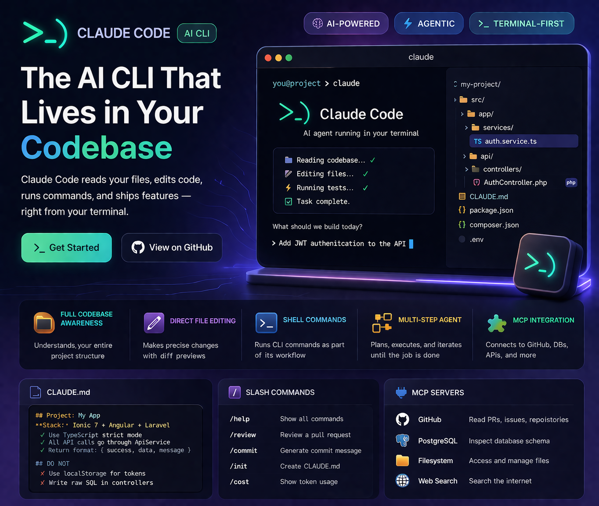

Claude Code (nicknamed "open claw" by developers for its distinctive claw-bracket icon >_) is Anthropic's agentic CLI tool that runs inside your terminal, reads your actual codebase, writes files, runs shell commands, and executes multi-step tasks autonomously. It's not a chat interface — it's an AI that operates directly on your project.
This is a complete guide covering installation, daily workflows, the CLAUDE.md configuration file, hooks, MCP server integration, and the real-world scenarios where Claude Code saves the most time.
git commands, executes tests, and handles multi-step tasks spanning many files — autonomously. They use the same underlying model but operate completely differently.
Installation & Setup
# Prerequisites: Node.js 18+ required
node --version # must be >= 18
# Install Claude Code globally
npm install -g @anthropic-ai/claude-code
# Verify installation
claude --version
# Authenticate (opens browser for OAuth)
claude
# Or set API key directly
export ANTHROPIC_API_KEY=sk-ant-...After authentication, run claude from any project directory and it immediately has access to your full file structure. It will read files, understand the codebase, and ask clarifying questions before making changes.
Key Features That Make Claude Code Different
Full Codebase Awareness
Claude Code reads your actual files — not just what you paste. It understands imports, function calls across files, schema definitions, and project structure without you explaining anything.
Direct File Editing
It makes precise edits to your source files — adding functions, refactoring logic, updating configs. Every edit is shown as a diff for your review before being applied (unless you enable auto-approve).
Shell Command Execution
Runs terminal commands as part of its workflow — npm install, php artisan migrate, git status, test runners. It chains commands intelligently based on the task.
Agentic Multi-Step Tasks
Give it a high-level goal — "Add JWT authentication to this Laravel API" — and it plans the steps, executes them in order, checks for errors, and iterates until the task is complete.
MCP Server Integration
Model Context Protocol (MCP) servers extend Claude Code with external tools — database introspection, API access, web search, Figma design reading, and more. The ecosystem is growing rapidly.
CLAUDE.md — Your Project's AI Brain
The most powerful Claude Code feature most developers underuse is the CLAUDE.md file. Place it in your project root and Claude Code reads it at the start of every session — giving it persistent context about your project without you repeating yourself.
# CLAUDE.md example
## Project: Property Management App
**Stack:** Ionic 7 + Angular 17 + Laravel 11 + MySQL
## Code Conventions
- Use TypeScript strict mode everywhere
- Services are injectable singletons in core/services/
- All API calls go through ApiService — never use HttpClient directly in components
- Use NgRx Signals for state management (not BehaviorSubjects)
- Laravel controllers use Form Requests for all validation
- Return format: { success: bool, data: any, message: string }
## Architecture Rules
- Feature modules are lazy-loaded — never import them eagerly
- Sensitive data uses @capacitor/preferences, never localStorage
- All DB queries use Eloquent — no raw SQL except for complex reports
## Testing
- Run tests: `npm run test` (Ionic) and `php artisan test` (Laravel)
- Coverage minimum: 80% for services and controllers
## DO NOT
- Use `any` type in TypeScript without a comment explaining why
- Write direct SQL queries in controllers
- Store auth tokens in localStorageSlash Commands
Claude Code has built-in slash commands for common operations:
Hooks — Automate Claude Code Behaviour
Hooks let you run shell commands automatically in response to Claude Code events — before/after tool calls, when files are saved, when tests run. Configured in ~/.claude/settings.json:
// ~/.claude/settings.json
{
"hooks": {
"PostToolUse": [
{
"matcher": "Write",
"hooks": [
{
"type": "command",
"command": "npx eslint --fix ${file}"
}
]
}
],
"PreToolUse": [
{
"matcher": "Bash",
"hooks": [
{
"type": "command",
"command": "echo 'Running: ${command}' >> ~/.claude/audit.log"
}
]
}
]
}
}Practical hook uses: auto-run ESLint after file edits, auto-format with Prettier, log all shell commands for audit, run affected tests after each edit.
MCP Servers — Extending Claude Code's Reach
Model Context Protocol (MCP) servers give Claude Code access to external systems. Configure them in ~/.claude/settings.json:
{
"mcpServers": {
"github": {
"command": "npx",
"args": ["-y", "@modelcontextprotocol/server-github"],
"env": { "GITHUB_PERSONAL_ACCESS_TOKEN": "ghp_..." }
},
"filesystem": {
"command": "npx",
"args": ["-y", "@modelcontextprotocol/server-filesystem", "/home/user/projects"]
},
"postgres": {
"command": "npx",
"args": ["-y", "@modelcontextprotocol/server-postgres", "postgresql://localhost/mydb"]
}
}
}With the GitHub MCP server, Claude Code can read PRs, create issues, review code, and push branches. With the Postgres MCP server, it can introspect your actual database schema before writing migration files.
Real Workflows I Use Daily
1. New feature from ticket to commit
> Read the GitHub issue #234 (with GitHub MCP), then implement the feature
> described. Follow the conventions in CLAUDE.md. Run tests when done.
2. Bug fix from error log
> Here's an error from our production logs: [paste log]
> Find the cause in the codebase and fix it. Show me the diff before applying.
3. Codebase-wide refactor
> Find all places where we're using localStorage directly.
> Replace them all with StorageService.get() / StorageService.set().
> Update imports where needed. Show me a summary of every file changed.
4. Generate tests for existing code
> Read src/app/core/services/auth.service.ts and generate
> comprehensive Jest unit tests for it. Mock all dependencies.
> Aim for 90%+ branch coverage. Place tests in auth.service.spec.ts.
Permission Modes & Safety
Claude Code operates in one of three permission modes:
- Default (ask): Prompts you to approve every file write and shell command — safest for unfamiliar codebases
- Auto-approve: Approve a specific tool type for the session — e.g. always allow file writes, always ask about shell commands
- YOLO mode (
--dangerously-skip-permissions): Fully autonomous — never asks, does everything. Use only in isolated/sandboxed environments
Need an AI-Powered Development Workflow?
I use Claude Code daily to build Ionic, Laravel, and Next.js projects faster. Let's discuss how AI tooling can speed up your development process.
Get Free Consultation →
Anju Batta
Senior Full Stack Developer & AI Automation Architect. I use Claude Code every day across Ionic, Laravel, and Next.js projects. Based in Chandigarh, India.
Read Also: Co-Working with Claude AI →